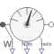

MultiSensorIdeal sensor to measure the torque and power between two flanges (= flange_a.tau*der(flange_a.phi)) and the absolute angular velocity |

|
Information
This information is part of the Modelica Standard Library maintained by the Modelica Association.
Measures the absolute angular velocity of a flange_a, the cut-torque and power between two flanges in an ideal way and provides the results as output signals w, tau and power, respectively.
Connectors (5)
| flange_a |
Type: Flange_a Description: Left flange of shaft |
|
|---|---|---|
| flange_b |
Type: Flange_b Description: Right flange of shaft |
|
| power |
Type: RealOutput Description: Power in flange flange_a as output signal |
|
| w |
Type: RealOutput Description: Absolute angular velocity of flange_a as output signal |
|
| tau |
Type: RealOutput Description: Torque in flange flange_a and flange_b (tau = flange_a.tau = -flange_b.tau) as output signal |
Used in Examples (6)
|
Modelica.Electrical.Machines.Examples.SynchronousMachines Test example: PermanentMagnetSynchronousMachine fed by current source |
|
|
Modelica.Electrical.Machines.Examples.SynchronousMachines Test example: PermanentMagnetSynchronousMachine fed by FOC |
|
|
Modelica.Electrical.Machines.Examples.SynchronousMachines Test example: ElectricalExcitedSynchronousMachine starting direct on line |
|
|
Modelica.Magnetic.FundamentalWave.Examples.BasicMachines.SynchronousMachines ElectricalExcitedSynchronousMachine starting direct on line |
|
|
Modelica.Mechanics.Rotational.Examples Example to show possible usage of support flange |
|
|
Modelica.Thermal.FluidHeatFlow.Examples Water pumping station |